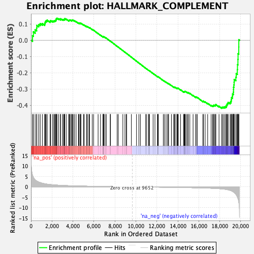
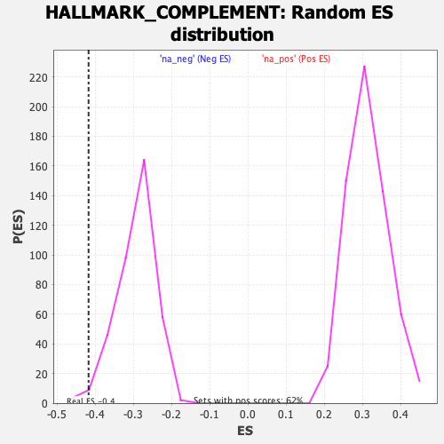

| | | Dataset | Test%20LTED%20wt |
| Phenotype | NoPhenotypeAvailable |
| Upregulated in class | na_neg |
| GeneSet | HALLMARK_COMPLEMENT |
| Enrichment Score (ES) | -0.4178482 |
| Normalized Enrichment Score (NES) | -1.4170108 |
| Nominal p-value | 0.010526316 |
| FDR q-value | 0.088219725 |
| FWER p-Value | 0.427 |
Table: GSEA Results Summary

Fig 1: Enrichment plot: HALLMARK_COMPLEMENT
Profile of the Running ES Score & Positions of GeneSet Members on the Rank Ordered List
| SYMBOL | RANK IN GENE LIST | RANK METRIC SCORE | RUNNING ES | CORE ENRICHMENT | | 1 | MMP12 | 145 | 5.627 | 0.0275 | No |
| 2 | LYN | 228 | 4.527 | 0.0514 | No |
| 3 | F7 | 395 | 3.420 | 0.0642 | No |
| 4 | KLKB1 | 539 | 2.833 | 0.0745 | No |
| 5 | USP8 | 553 | 2.776 | 0.0910 | No |
| 6 | CLU | 734 | 2.338 | 0.0964 | No |
| 7 | FYN | 880 | 2.070 | 0.1018 | No |
| 8 | PDP1 | 1085 | 1.737 | 0.1022 | No |
| 9 | FN1 | 1308 | 1.506 | 0.1003 | No |
| 10 | CSRP1 | 1337 | 1.480 | 0.1081 | No |
| 11 | SCG3 | 1372 | 1.449 | 0.1153 | No |
| 12 | F8 | 1451 | 1.380 | 0.1199 | No |
| 13 | PRKCD | 1547 | 1.308 | 0.1232 | No |
| 14 | CPM | 1823 | 1.128 | 0.1163 | No |
| 15 | LGALS3 | 1869 | 1.104 | 0.1208 | No |
| 16 | MMP15 | 2046 | 1.010 | 0.1181 | No |
| 17 | CASP9 | 2168 | 0.959 | 0.1180 | No |
| 18 | FCER1G | 2248 | 0.929 | 0.1197 | No |
| 19 | ANG | 2324 | 0.901 | 0.1215 | No |
| 20 | SERPINA1 | 2380 | 0.880 | 0.1241 | No |
| 21 | DOCK10 | 2388 | 0.877 | 0.1292 | No |
| 22 | SERPINC1 | 2428 | 0.865 | 0.1326 | No |
| 23 | TFPI2 | 2485 | 0.846 | 0.1350 | No |
| 24 | MSRB1 | 2642 | 0.798 | 0.1320 | No |
| 25 | MMP14 | 2809 | 0.744 | 0.1282 | No |
| 26 | ME1 | 2828 | 0.737 | 0.1319 | No |
| 27 | MAFF | 3014 | 0.689 | 0.1268 | No |
| 28 | SPOCK2 | 3103 | 0.671 | 0.1265 | No |
| 29 | PIK3R5 | 3169 | 0.655 | 0.1272 | No |
| 30 | PHEX | 3218 | 0.643 | 0.1288 | No |
| 31 | PSEN1 | 3220 | 0.643 | 0.1327 | No |
| 32 | RNF4 | 3359 | 0.614 | 0.1295 | No |
| 33 | GP1BA | 3595 | 0.570 | 0.1211 | No |
| 34 | RBSN | 3635 | 0.562 | 0.1226 | No |
| 35 | DOCK9 | 3689 | 0.553 | 0.1234 | No |
| 36 | ANXA5 | 3740 | 0.545 | 0.1242 | No |
| 37 | RHOG | 3874 | 0.523 | 0.1207 | No |
| 38 | COL4A2 | 3898 | 0.518 | 0.1228 | No |
| 39 | CALM1 | 3959 | 0.508 | 0.1229 | No |
| 40 | STX4 | 4030 | 0.498 | 0.1224 | No |
| 41 | XPNPEP1 | 4149 | 0.478 | 0.1194 | No |
| 42 | GMFB | 4301 | 0.457 | 0.1145 | No |
| 43 | ADAM9 | 4529 | 0.427 | 0.1057 | No |
| 44 | PDGFB | 4574 | 0.421 | 0.1061 | No |
| 45 | CFB | 4691 | 0.406 | 0.1027 | No |
| 46 | ATOX1 | 4702 | 0.405 | 0.1047 | No |
| 47 | PCLO | 4766 | 0.398 | 0.1040 | No |
| 48 | S100A13 | 5003 | 0.370 | 0.0943 | No |
| 49 | C2 | 5073 | 0.363 | 0.0930 | No |
| 50 | CASP7 | 5295 | 0.341 | 0.0840 | No |
| 51 | ADRA2B | 5319 | 0.338 | 0.0849 | No |
| 52 | MMP13 | 5425 | 0.327 | 0.0816 | No |
| 53 | USP15 | 5551 | 0.314 | 0.0772 | No |
| 54 | CTSL | 5586 | 0.310 | 0.0774 | No |
| 55 | VCPIP1 | 5841 | 0.284 | 0.0663 | No |
| 56 | RAF1 | 5972 | 0.269 | 0.0613 | No |
| 57 | DYRK2 | 6399 | 0.230 | 0.0412 | No |
| 58 | DGKH | 6623 | 0.214 | 0.0312 | No |
| 59 | PIK3CA | 6871 | 0.195 | 0.0199 | No |
| 60 | CDH13 | 6873 | 0.195 | 0.0210 | No |
| 61 | PRSS36 | 6907 | 0.192 | 0.0205 | No |
| 62 | DUSP6 | 6913 | 0.191 | 0.0215 | No |
| 63 | EHD1 | 6918 | 0.191 | 0.0225 | No |
| 64 | PPP2CB | 6985 | 0.185 | 0.0203 | No |
| 65 | RASGRP1 | 7136 | 0.173 | 0.0137 | No |
| 66 | HSPA5 | 7165 | 0.171 | 0.0134 | No |
| 67 | WAS | 7554 | 0.141 | -0.0054 | No |
| 68 | USP14 | 7580 | 0.140 | -0.0058 | No |
| 69 | APOBEC3F | 8216 | 0.094 | -0.0374 | No |
| 70 | LAP3 | 8325 | 0.087 | -0.0424 | No |
| 71 | KCNIP2 | 8759 | 0.059 | -0.0640 | No |
| 72 | BRPF3 | 8960 | 0.046 | -0.0738 | No |
| 73 | SIRT6 | 9093 | 0.037 | -0.0803 | No |
| 74 | ITGAM | 9121 | 0.035 | -0.0814 | No |
| 75 | TIMP2 | 9572 | 0.005 | -0.1042 | No |
| 76 | CP | 10062 | -0.026 | -0.1289 | No |
| 77 | CALM3 | 10290 | -0.040 | -0.1401 | No |
| 78 | PRCP | 10433 | -0.050 | -0.1470 | No |
| 79 | LIPA | 10931 | -0.080 | -0.1717 | No |
| 80 | GATA3 | 11033 | -0.087 | -0.1763 | No |
| 81 | HSPA1A | 11210 | -0.099 | -0.1846 | No |
| 82 | PRDM4 | 11243 | -0.102 | -0.1856 | No |
| 83 | GNAI2 | 11299 | -0.105 | -0.1877 | No |
| 84 | GNAI3 | 11643 | -0.125 | -0.2044 | No |
| 85 | CTSO | 11819 | -0.138 | -0.2124 | No |
| 86 | LRP1 | 12061 | -0.155 | -0.2236 | No |
| 87 | C3 | 12073 | -0.155 | -0.2232 | No |
| 88 | PIM1 | 12108 | -0.159 | -0.2240 | No |
| 89 | C1S | 12144 | -0.161 | -0.2247 | No |
| 90 | SH2B3 | 12615 | -0.193 | -0.2474 | No |
| 91 | CD55 | 12724 | -0.199 | -0.2516 | No |
| 92 | GRB2 | 12877 | -0.209 | -0.2580 | No |
| 93 | LGMN | 13018 | -0.219 | -0.2638 | No |
| 94 | CD46 | 13101 | -0.226 | -0.2665 | No |
| 95 | PREP | 13119 | -0.227 | -0.2660 | No |
| 96 | TNFAIP3 | 13389 | -0.247 | -0.2781 | No |
| 97 | ZEB1 | 13611 | -0.264 | -0.2877 | No |
| 98 | CDK5R1 | 13656 | -0.267 | -0.2882 | No |
| 99 | LCK | 13727 | -0.273 | -0.2901 | No |
| 100 | PFN1 | 13744 | -0.274 | -0.2892 | No |
| 101 | FDX1 | 13909 | -0.287 | -0.2958 | No |
| 102 | RCE1 | 13926 | -0.288 | -0.2948 | No |
| 103 | F10 | 13969 | -0.291 | -0.2951 | No |
| 104 | HPCAL4 | 13989 | -0.292 | -0.2943 | No |
| 105 | LTA4H | 14051 | -0.297 | -0.2955 | No |
| 106 | AKAP10 | 14263 | -0.314 | -0.3043 | No |
| 107 | NOTCH4 | 14543 | -0.335 | -0.3163 | No |
| 108 | PPP4C | 14608 | -0.340 | -0.3175 | No |
| 109 | CEBPB | 14630 | -0.343 | -0.3164 | No |
| 110 | KIF2A | 14643 | -0.344 | -0.3149 | No |
| 111 | RABIF | 14683 | -0.348 | -0.3147 | No |
| 112 | LAMP2 | 14725 | -0.352 | -0.3146 | No |
| 113 | CASP1 | 14851 | -0.363 | -0.3187 | No |
| 114 | F3 | 14963 | -0.373 | -0.3220 | No |
| 115 | CBLB | 14990 | -0.375 | -0.3210 | No |
| 116 | CPQ | 15144 | -0.392 | -0.3264 | No |
| 117 | USP16 | 15456 | -0.422 | -0.3395 | No |
| 118 | IRF1 | 15712 | -0.451 | -0.3496 | No |
| 119 | CASP3 | 15743 | -0.454 | -0.3484 | No |
| 120 | CASP10 | 15861 | -0.465 | -0.3514 | No |
| 121 | CD59 | 16393 | -0.534 | -0.3750 | No |
| 122 | GNB2 | 16433 | -0.540 | -0.3737 | No |
| 123 | TMPRSS6 | 16603 | -0.562 | -0.3787 | No |
| 124 | IRF2 | 16846 | -0.602 | -0.3873 | No |
| 125 | CTSS | 17177 | -0.663 | -0.3999 | No |
| 126 | DOCK4 | 17315 | -0.693 | -0.4026 | No |
| 127 | CTSD | 17392 | -0.710 | -0.4020 | No |
| 128 | KCNIP3 | 17416 | -0.716 | -0.3987 | No |
| 129 | CTSV | 17515 | -0.741 | -0.3991 | No |
| 130 | DUSP5 | 17590 | -0.761 | -0.3982 | No |
| 131 | CASP4 | 17627 | -0.771 | -0.3952 | No |
| 132 | KYNU | 17929 | -0.872 | -0.4051 | No |
| 133 | GPD2 | 18182 | -0.971 | -0.4118 | Yes |
| 134 | GCA | 18280 | -1.016 | -0.4105 | Yes |
| 135 | PLSCR1 | 18398 | -1.089 | -0.4096 | Yes |
| 136 | APOC1 | 18514 | -1.162 | -0.4083 | Yes |
| 137 | CCL5 | 18618 | -1.242 | -0.4058 | Yes |
| 138 | PLAUR | 18637 | -1.257 | -0.3989 | Yes |
| 139 | JAK2 | 18698 | -1.317 | -0.3938 | Yes |
| 140 | CTSH | 18735 | -1.349 | -0.3873 | Yes |
| 141 | CTSC | 18803 | -1.421 | -0.3819 | Yes |
| 142 | SRC | 18985 | -1.686 | -0.3806 | Yes |
| 143 | CTSB | 19075 | -1.847 | -0.3737 | Yes |
| 144 | ERAP2 | 19098 | -1.886 | -0.3631 | Yes |
| 145 | IRF7 | 19120 | -1.926 | -0.3522 | Yes |
| 146 | CD36 | 19207 | -2.173 | -0.3431 | Yes |
| 147 | F5 | 19220 | -2.205 | -0.3301 | Yes |
| 148 | CA2 | 19296 | -2.456 | -0.3187 | Yes |
| 149 | DPP4 | 19310 | -2.509 | -0.3038 | Yes |
| 150 | SERPING1 | 19314 | -2.512 | -0.2884 | Yes |
| 151 | TIMP1 | 19343 | -2.623 | -0.2736 | Yes |
| 152 | PLA2G4A | 19369 | -2.751 | -0.2578 | Yes |
| 153 | S100A9 | 19377 | -2.781 | -0.2409 | Yes |
| 154 | C1R | 19532 | -3.508 | -0.2270 | Yes |
| 155 | CR2 | 19569 | -3.817 | -0.2052 | Yes |
| 156 | GNB4 | 19673 | -4.852 | -0.1803 | Yes |
| 157 | PSMB9 | 19689 | -5.044 | -0.1498 | Yes |
| 158 | PLAT | 19731 | -5.553 | -0.1175 | Yes |
| 159 | SERPINE1 | 19743 | -5.704 | -0.0827 | Yes |
| 160 | S100A12 | 19812 | -7.158 | -0.0418 | Yes |
| 161 | ACTN2 | 19816 | -7.317 | 0.0033 | Yes |
Table: GSEA details [plain text format]

Fig 2: HALLMARK_COMPLEMENT: Random ES distribution
Gene set null distribution of ES for HALLMARK_COMPLEMENT